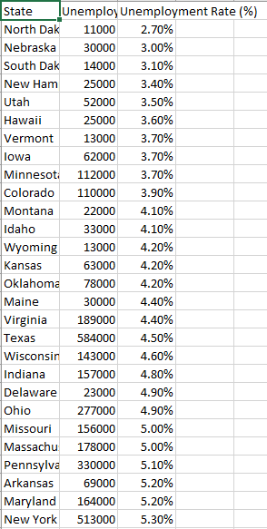
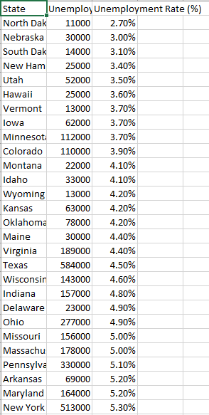
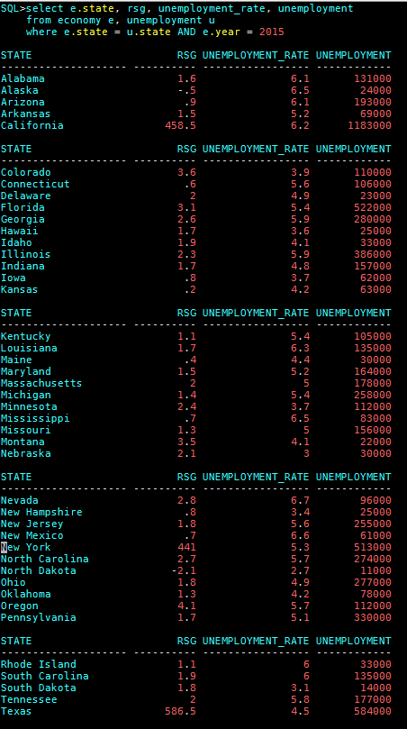
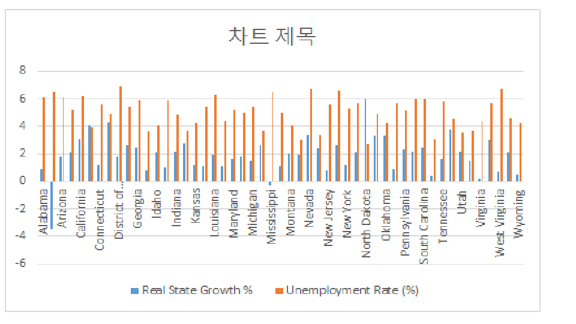

Dataset We Use (Economy & Unemployment)
 

Query We Use
I trim the dataset so it just shown the economy growth of 2015 (the unemployment dataset is from 2015) and the employment rate
Conclusion
According to the graph, we can tell the Unemployment rate are really high. We expected if the RSG is higher, the unemployment will be also higher, however, the graph doesn’t show out like that. We can easily see like Alabama have high Unemployment, but they have negative RSG. What we think is education and company...etc. affect the rate, which the rich people become more rich and the poor people will become unemployment., because rich people have more effect rather than the poor people, poor people won’t affect the economy.
